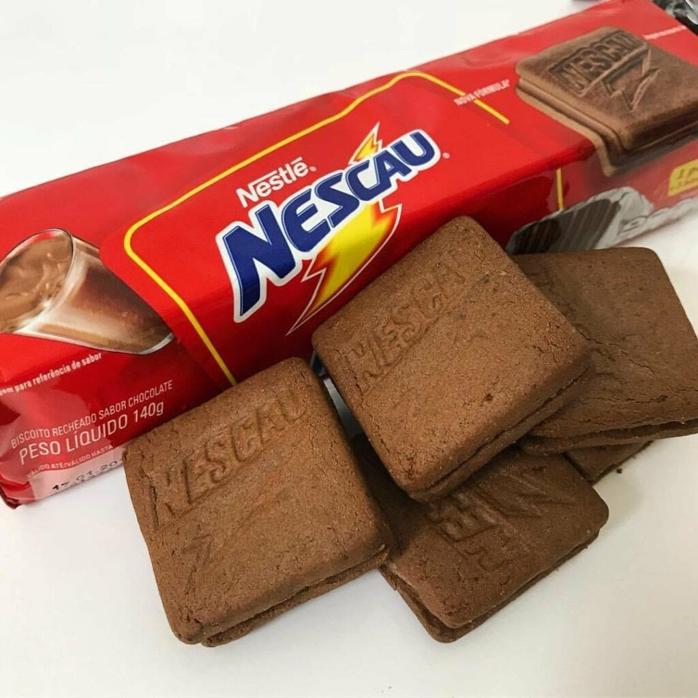

Doces · Biscoitos
Bolacha de Nescau

Ingredientes
- 1 copo de farinha de trigo
- 1 copo de Nescau
- 1 ovo
- 3 colheres de margarina
Modo de preparo
- Misture farinha, Nescau, ovo e margarina até formar massa homogênea.
- Modele bolinhas, coloque numa assadeira e achate com um garfo.
- Leve ao forno por 15 minutos.